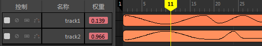

每个时间编辑器动画片段的“权重”(Weight)特性确定了在场景中播放其中的多少动画。通过在动画片段“权重”(Weight)上设置关键帧，可以融合片段的输入和输出效果，从而动画显示片段在任意给定时间对结果动画的影响量。当两个或多个位于不同轨迹上的片段在时间上重叠并驱动相同的元素时，可以通过设置用于控制片段相对影响的权重来将其混合在一起。此特性显示为轨迹的特性并始终反映当前时间的权重。
调整片段的权重时，可以控制它相对于生成的动画中其他片段的影响程度。混合权重越高，片段对动画的影响就越大。
设置权重的动画后，将创建权重曲线，您可以像处理任何其他动画曲线一样对其进行调整。请参见更改片段权重。
权重曲线将显示在轨迹视图中的片段上。

注： 若要对片段的动画加权，必须在多个轨迹上设置动画片段。
- 将当前时间标记指示器移动到动画片段中要设置关键帧的时刻。
- 在“权重”(Weight)字段上单击鼠标右键，然后从时间编辑器权重(Weight)上下文菜单中选择“设置关键帧”(Set Key)。
- 接下来，在“轨迹权重”(Track Weight)字段中输入权重值。
- 再次单击“设置关键帧”(Set Key)。
-
注： 如果权重值超出范围 0-1，则权重曲线显示为虚线。您可以设置超过此范围的权重，但默认情况下，混合权重将会平均化（归一化）。因此，如果在给定的帧上，片段 A 的权重为 1 且片段 B 的权重为 2，则 A 的影响为 33% (1/(1 + 2))，B 的影响为 66%。
注： 片段的权重为 0 时将停止动画。
- 继续在片段上设置权重。
注： 在时间编辑器中，可以使用
自动关键帧(Auto Key)功能设置权重的关键帧。为了遵循 Maya 自动关键帧规则，在使用“自动关键帧”(Auto Key)之前，属性必须已存在关键帧。
权重”(Weight)字段变为红色，表示动画的默认权重已更改。动画片段上的红色曲线将显示所做的更改。